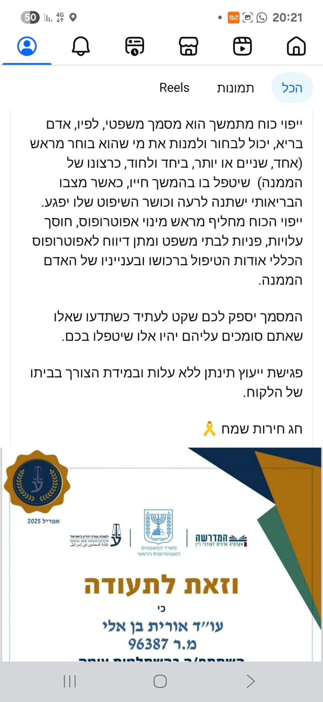
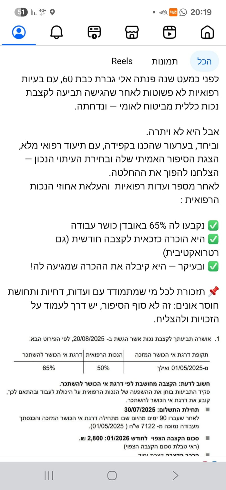

ייפוי כוח מתמשך - למה זה חשוב?
ייפוי כוח מתמשך הוא מסמך משפטי שמאפשר לכם לבחור מראש מי יטפל בכם בעתיד.
קרא עודמידע וטיפים שיעזרו לכם להבין את הזכויות שלכם

ייפוי כוח מתמשך הוא מסמך משפטי שמאפשר לכם לבחור מראש מי יטפל בכם בעתיד.
קרא עוד
לקוחה שנדחתה מביטוח לאומי - הצלחנו להשיג לה 65% אובדן כושר עבודה וקצבה חודשית.
קרא עוד